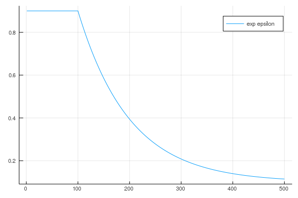

Action Selectors
AbstractDiscreteActionSelectorGenerate an action given the estimated value of different actions.
| Required Methods | Brief Description |
|---|---|
selector(values; kwargs...) | selector, an instance of AbstractDiscreteActionSelector, must be a callable object which takes in an estimation of all discrete actions and returns an action. |
AlternateSelector(n::Int)Used to ensure that all actions are selected alternatively.
Fields
n::Int: means the optional actions are1:n.step::Int=0: record the number of times that the selector is applied.
EpsilonGreedySelector{T}(;kwargs...)Epsilon-greedy strategy: The best lever is selected for a proportion
1 - epsilonof the trials, and a lever is selected at random (with uniform probability) for a proportion epsilon . Multi-armed_bandit
Two kinds of epsilon-decreasing strategy are implmented here (linear and exp).
Epsilon-decreasing strategy: Similar to the epsilon-greedy strategy, except that the value of epsilon decreases as the experiment progresses, resulting in highly explorative behaviour at the start and highly exploitative behaviour at the finish. - Multi-armed_bandit
Keywords
T::Symbol: defines how to calculate the epsilon in the warmup steps. Supported values arelinearandexp.step::Int = 1: record the current step.ϵ_init::Float64 = 1.0: initial epsilon.warmup_steps::Int=0: the number of steps to useϵ_init.decay_steps::Int=0: the number of steps for epsilon to decay fromϵ_inittoϵ_stable.ϵ_stable::Float64: the epsilon afterwarmup_steps + decay_steps.
Example
s = EpsilonGreedySelector{:linear}(ϵ_init=0.9, ϵ_stable=0.1, warmup_steps=100, decay_steps=100)
plot([RL.get_ϵ(s, i) for i in 1:500], label="linear epsilon")
s = EpsilonGreedySelector{:exp}(ϵ_init=0.9, ϵ_stable=0.1, warmup_steps=100, decay_steps=100)
plot([RL.get_ϵ(s, i) for i in 1:500], label="exp epsilon")
UCBSelector(na; c=2.0, ϵ=1e-10)Arguments
nais the number of actions used to create a internal counter.tis used to store current time step.cis used to control the degree of exploration.
WeightedSelector(is_normalized::Bool)is_normalized is used to indicating if the feeded action values are alrady normalized to have a sum of 1.0.